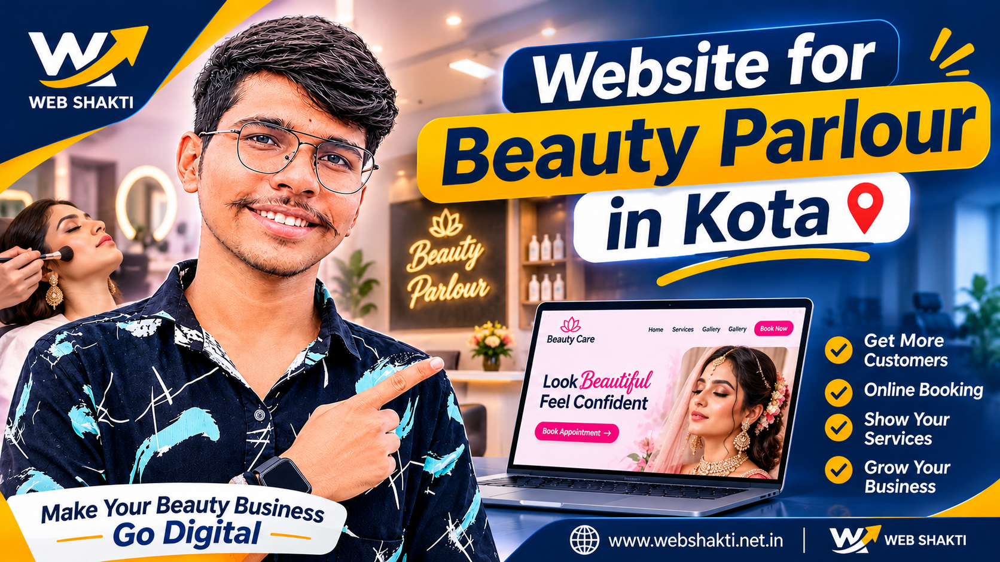
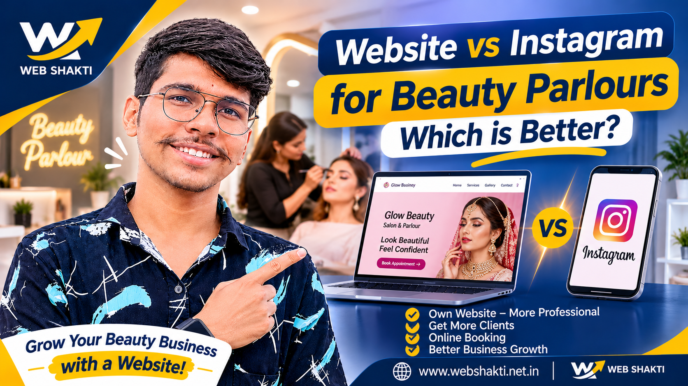
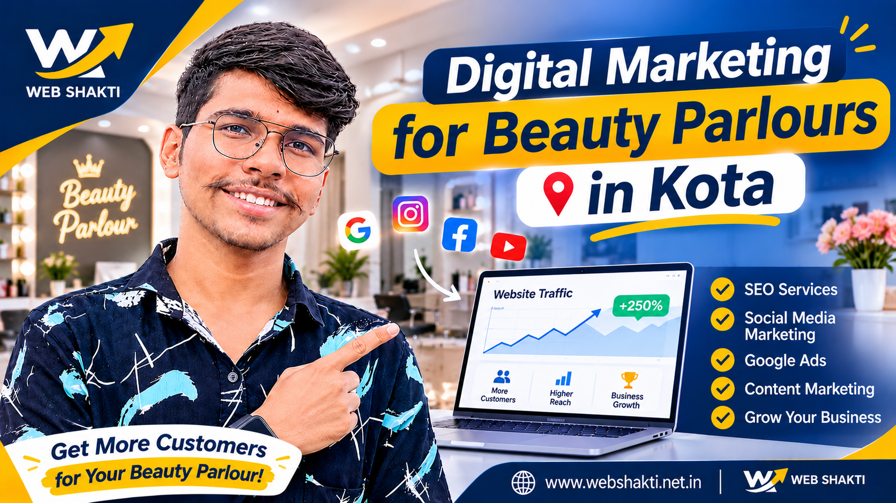
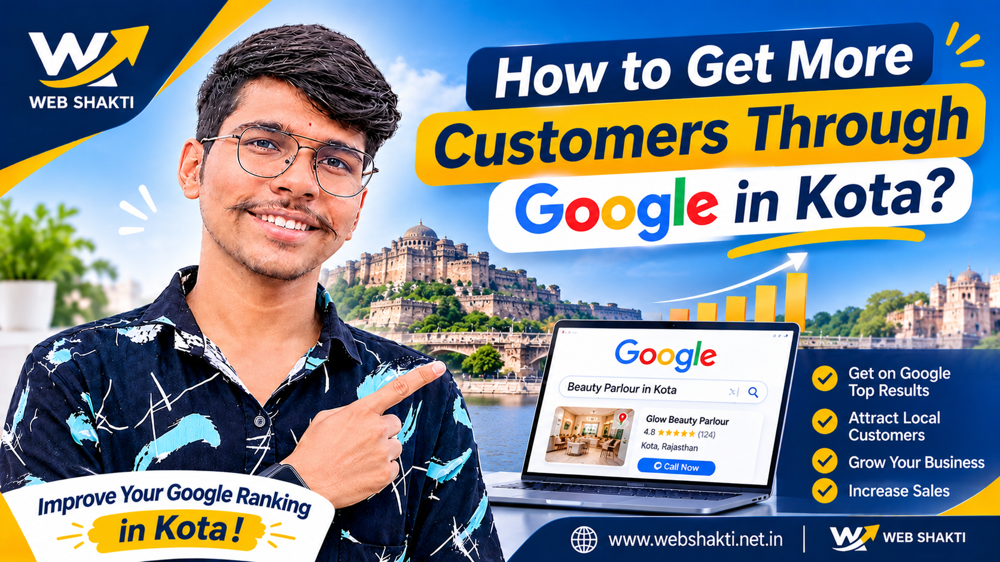
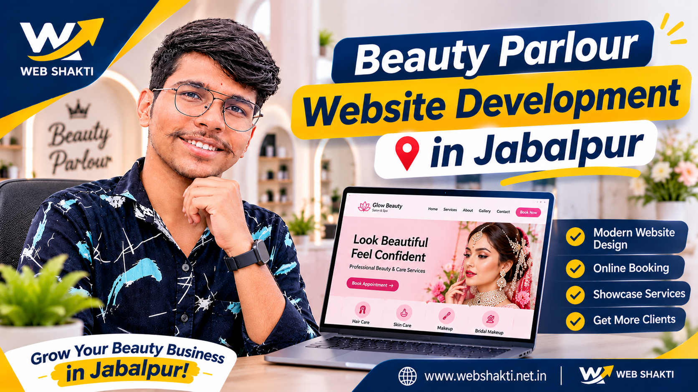
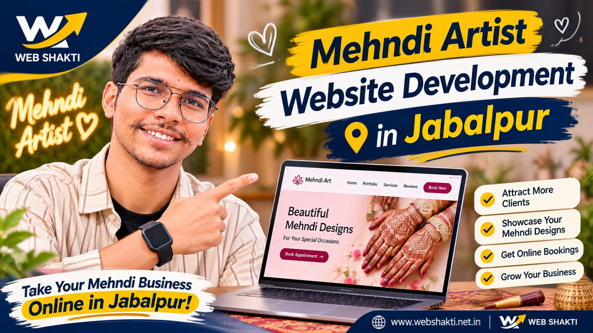

Website
Website Development Cost in India (2026): What Should You Pay?
Typical price ranges for business websites, online stores and web apps in India, what pushes the price up, and the costs most people forget.
Read articleStraight answers on website cost, local SEO, Google Maps, beauty business websites and apps for business owners in Kota, Jabalpur and across India.
Typical price ranges for business websites, online stores and web apps in India, what pushes the price up, and the costs most people forget.
Read article
Brides, college girls and families in Kota search Google before they book a parlour.
Mehndi is a visual business, and your best designs deserve more than a scrolling Instagram grid.

A bride booking her makeup artist is making a big decision, and she looks for proof.


In Kota, a simple business website can start from a few thousand rupees per year, while online stores and custom web apps cost more.
The best website for a small business is the simplest one that brings enquiries.

A 10-point checklist for comparing website companies in Kota and Jabalpur, from live work and ownership to SEO and after-launch support.


Digital marketing for a parlour is not about big ads.

When people in Kota search for a service, they call the first businesses they see.

Customers in Jabalpur look up parlours on their phone before they walk in.

Wedding families in Jabalpur book mehndi artists weeks ahead.

Fourteen simple steps to set up and optimise your Google Business Profile so nearby customers can find, call and visit you.


Online booking saves your front desk time and gets appointments even at night.

Small businesses in Jabalpur can compete with bigger names by being local, active and easy to reach online.

Website prices in Jabalpur vary with pages, features and support.

Local SEO helps nearby customers find your business when they search.

Instagram gets attention, a website gets customers. Here is how they differ and how a small business should combine them.

Customers check your business online before visiting.

Using one team for your website and marketing means the design, SEO and social content all work together.

Understand the three common website types, what each is good for, and how to pick without paying for features you will never use.

Most small businesses should start with a website. Here is when an app becomes worth it and how to plan the move in phases.
No articles match your search. Try a different word or choose All.
Tell us about your business. We will suggest the simplest option that works and give you a clear quote.